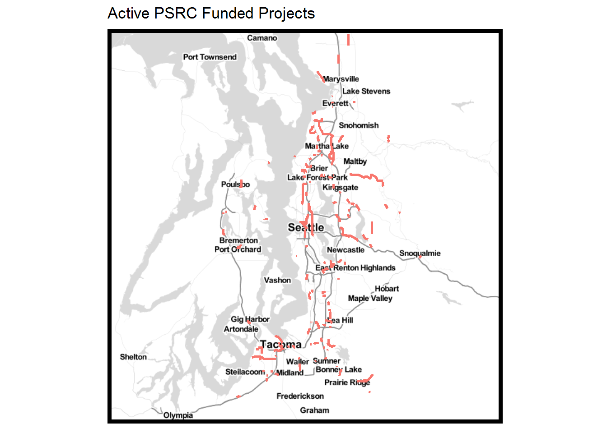

maps
library(pacman)
pacman::p_load(grid, gridExtra,Rmisc,ggthemes,gsheet,RCurl,dplyr, xlsx, RODBC, ggmap, foreign, maptools, rgdal, ggplot2, devtools, broom, sp, maps, mapdata, googlesheets)
setwd("X:/Trans/STAFF/Reid/viz/ggmap")
shapefile <- readOGR(dsn=".", layer="progress_reports",verbose = FALSE)
shapefile<-spTransform(shapefile, CRS("+proj=longlat +datum=WGS84"))
seattle<- c(lon = -122.335167, lat = 47.608013)
seattle_map_bw <- get_map(seattle, zoom = 9, scale=1, maptype="toner-lite", source="stamen" )
ggmap(seattle_map_bw) +
geom_path(data=shapefile, aes(x=long, y=lat, group=group, color="red"), size=.9) +
theme (axis.text.x=element_blank(), axis.text.y=element_blank(), axis.ticks.x=element_blank(), axis.ticks.y=element_blank() , axis.title.x=element_blank(), axis.title.y=element_blank(),panel.border = element_rect(colour = "black", fill=NA, size=3),legend.position="none") +
ggtitle("Active PSRC Funded Projects")
library(leaflet)
m <- leaflet() %>%
addTiles() %>% # Add default OpenStreetMap map tiles
addMarkers(lng=174.768, lat=-36.852, popup="The birthplace of R")
m